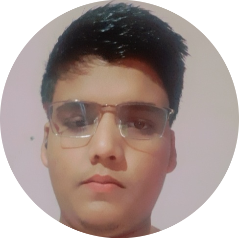

Anurag Sharma

Summary
I am a skilled developer with experience in C, C++, Python, Java, Web development and problem-solving.With a Bachelor of Technology in Computer Science, I excel in creating innovative projects like a library management system and travelling agency software. I am eager to leverage my technical expertise in collaborative environments for impactful solutions.
Education
- 10th
Saraswati Sishu Mandir Kedardham, Gwalior, Madhya Pradesh, (CBSE Board) 72.8%
-
12th
GOVT. Higher Secondary School Kutrawali, Morena, Madhya Pradesh, (MP. Board) 74.8%
-
B.Tech (Computer Science)
Rajiv Gandhi Proudyogiki Vishwavidyalaya, Bhopal, (M.P.) 6.94
Skills
Hard Skills:
- Programming Languages⭐️⭐️⭐️
- Coding⭐️⭐️⭐️
- Project management⭐️⭐️
- Problem-solving⭐️⭐️⭐️
- Data analysis⭐️⭐️
- Writing⭐️⭐️⭐️⭐️
- Time Management⭐️⭐️⭐️
- Debugging⭐️⭐️
- Web Dovelopment⭐️
Techniques:
- Web Programming⭐️⭐️
- Web Development⭐️
Tools and Software:
- Visual Code Studios⭐️
- MS Word⭐️⭐️⭐️
- MS Excel⭐️⭐️⭐️⭐️
- MS PowerPoint⭐️⭐️⭐️
- Canva⭐️⭐️
- Github⭐️
Languages:
- English (Native)⭐️⭐️⭐️⭐️
- Hindi (Native)⭐️⭐️⭐️
Hobbies
- Listening to music
- Travelling
- Reading novel
- C Programming for Beginners- Master of C Language
- 100 Days Of code: The Complete Python Pro Bootcamp
- Microsoft Excel – Excel from Beginner to Advanced
- Java 17 Masterclass: Start coding in 2024
- Beginning C++ programming – From Beginner to Beyond
Personal Information
- Name: Anurag Sharma
- Father name: Pavan Kumar Sharma
- Date of Birth: 29-SEP-2004
- Sex: Male
- Marital status: Unmarried
- Residence: Morena (M.P.)